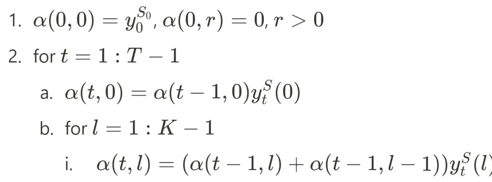
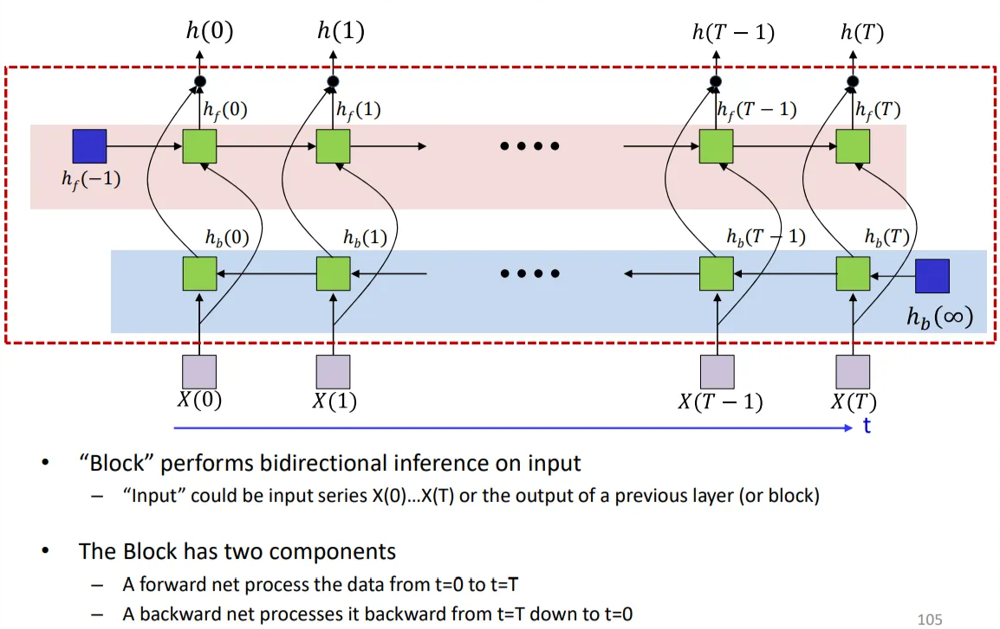

→ both backprop and perceptron algorithms find solutions
Perceptron may change greatly upon adding just a single new training instance
Makes no errors if possible– But high variance
Can swings wildly in response to small changes to input
Backprop is minimally changed by new training instances
Prefers consistency over perfection
Low-variance estimator, at the potential cost of bias
t>>0 - perceptron may take t2 iteration to find the solution
For t>>0, ∣wy∣>ϵ
(1−ϵ−σ(−wy+b))→1 as t→∞
σ’(−wyt+b)→exp0 as t→∞
⇒dwydDiv4=dbdDiv4=0
→ (0,−t) does not change the gradient of the L2 divergence near the optimal solution for 3 points → The optimum solution for 3 points is also a broad local minimum (0 gradient) for the 4-point problem!
The loss surface
Saddle points (slope=0, some of the eigenvalues of Hessian are positive, some are negative) are far more common than local minima
Frequency of occurrence exponential in network size
Most local minima are equivalent & close to global minimum
This is not true for small networks
Gradient descent algorithms often get “stuck” in saddle points
Neural network loss surface is generally not convex (Streetlight effect)
KL loss is convex as a function of weights for a single-layer perceptron (for 2-dimensional inputs {(xi,yi)}i∈[n]), while L2 is not.
Optimization
(Convex) optimization
GD = iterative algorithm
may or may not converge
Convergence rate:
⁍
where x∗ is the fixed point (optimal value of x), x(k+1) is the k-th iteration of the iterative algorithm.
Linear convergence
∣f(x(k))−f(x∗)∣≤Rk∣f(x(0))−f(x∗)∣
GD on any differentiable convex surface F(w)
E.g. minimizewF=21aw2+bw+c
Take O(logϵ1) to reach within ϵ of the optimal solution
With fixed step size η: w(k+1)=w(k)−ηdwdF(w(k))
where D(wi(k),wi(k−1))=Δw(k−1)F’(wk(k))−F’(wi(k−1)) is finite-difference approximation of Hessian F’’(wi(k)∣wj(k),j=i)
For training NN, Div’(wl,ij(k)) can be computed using backpropagation and used to estimate the Hessian.
Nestorov’s method
Momentum update:
Computes the gradient step at the current location
Δw(k)=βΔw(k−1)−η∇wF(w(k−1))T
Adds in the scaled previous step
w(k)←w(k−1)+Δw(k)
where β<1
⇒ Converges much faster
If we loop through the samples in the same order, we may get cyclic behavior
⇒ add randomness to improve convergence
Simultaneously adjust the function at all training points
Process all training points before making a single adjustment
“Batch” update
Incremental update (stochastic GD)
Why incremental update works?
Individual training instances contribute different directions to the overall gradient (final gradient points is the average of individual gradients)
Consider case where X1=X2=⋯=XD (data clotting)
As data get increasingly diverse, the benefits of incremental updates decrease, but do not entirely vanish.
When does incremental update works?
→ The model to always minimize the error on the latest instance, hence limit the convergence
⇒ Shrink the learning rate with iterations ⇒ parameters swing less and less towards the new point
SGD converges “almost surely” to a global or local minimum for most functions.
Sufficient condition: step sizes follow the following conditions [Robbins and Munro, 1951] ∑kηk=∞
Eventually the entire parameter space can be searched ∑kηk2<∞
The steps shrink!
The fastest converging series that satisfies both above requirements ηk∝k1 (the optimal rate of shrinking the step size for strongly convex functions, or heuristically determined)
If the loss is convex, SGD converges to the optimal solution; otherwise, it converges to a local minimum
The empirical risk is an unbiased estimate of the expected divergence:
Having very few samples makes the estimate swing wildly with the sample position
But SGD provides significantly quicker updates than batch ⇒ Mini-batch
Mini-batch update
Adjust the function at a small, randomly chosen subset of points.
Vary the subsets randomly in different passes through the training data
If the subsets cover the training set, we will have adjusted the entire function
Larger minibatches
= less variance = few updates per epoch
Mini-batch loss:
MBLoss(W)=b1∑i=1bdiv(f(Xi;W),g(Xi))
⇒E[MBLoss(W)]=E[div(f(X;W),g(X))]
var[MBLoss]=b1var[div] where b<<N
Nestorov’s methodfor mini-batch update:
RMS Prop
Do:
ADAM: RMSprop with momentum
Maintain a running estimate of the mean derivative for each parameter– Maintain a running estimate of the mean squared value of derivatives for each parameter Ensures that the and – Learning rate is proportional to the inverse of the root mean squared derivative
BN requires μB, σB2 for test data ← achieve this by averaging all training minibatches
μB=Nbatches1∑batchμB(batch)
σB2=(B−1)NbatchesB∑batchσB2(batch) (unbiased estimator for the variance)
where μB(batch) and σB2(batch) are obtained from the final converged network.
BN may only be applied to some layers (or even only selected neurons in the layer)
Improves both convergence rate and neural network performance
Anecdotal evidence that BN eliminates the need for dropout
To get maximum benefit from BN, learning rates must be increased and learning rate decay can be faster since the data generally remain in the high-gradient regions of the activations
Also needs better randomization of training data order.
Smoothing
Consider a binary 100-dimensional input
There are 2100=1030 possible inputs
Complete specification of the function will require specification of 1030 output values.
A training set with only 1015 training instances will be off by a factor of 1015
⇒ Steep changes that enable overfitted responses are facilitated by perceptrons with large w.
⇒ Constraining the weights to be low will force slower perceptrons and smoother output response ⇒ Regularization.
OverfittingSimple binary classifier
The “desired” output is generally smooth - capture statistical or average trends.
Unconstrained model will model individual instances instead.
Each layer works on the already smooth surface output by the previous layer
Bagging
Smoothness through network structure
For a given number of parameters deeper networks impose more smoothness than shallow ones
Training with more data is also better :))
Other smoothing techniques:
L1 regularization of network activations
Regularizing with added noise
Bagging (proposed by Leo Breiman)
Sample training data and train several different classifiers
Classify test instance with entire ensemble of classifiers
Vote across classifiers for final decision
Empirically shown to improve significantly over training a single classifier from combined data
Dropout
→ Training: For each input, at each iteration, “turn off” each neuron (including inputs) with a probability 1−α
In practice, set them to 0 according to the failure of a Bernoulli random number generator with success probability α
Backpropagation is effectively performed only over the remaining network
The effective network is different for different inputs
Gradients are obtained only for the weights and biases from “On” nodes to “On” nodes (for the remaining, the gradient is just 0)
Can later use regular activation σ(.) during testing without needs to modify the weights
Variations
Zoneout (for RNNs): randomly chosen units remain unchanged across a time transition
Dropconnect: drop individual connections, instead of nodes
Shakeout: scale up the weights of randomly selected weights & fix remaining weights to a negative constant
∣w∣w→α∣w∣+(1−α)c→−c
Whiteout: add or multiply weight-dependent Gaussian noise to the signal on each connection
Some other tricks (heuristics)
Early stopping
Continued training can result in over fitting to training data
Track performance on a held-out validation set
Apply one of several early-stopping criterion to terminate training when performance on validation set degrades significantly
Gradient clipping
→ Instability training when the Div has a steep slope
Set a ceiling on derivative value: if ∇wDiv>α, then ∇wDiv←α.
Data augmentation
→ Available training data will often be small
“Extend” it by distorting examples in a variety of ways to generate synthetic labelled examples
E.g. rotation, stretching, adding noise, etc.
Input normalization
Takeaways
“Learning” a neural network = determining the parameters of the network (weights and biases) required for it to model a desired function, given the network must have sufficient capacity to model the function
Training an MLP with threshold-function activation perceptrons will require knowledge of the input-output relation for every training instance, for every perceptron in the network
This is an NP-complexity combinatorial optimization problem
Optimize network parameters to minimize empirical risk using gradient descent
Differentiable divergence
Differentiable activation functions
Gradients (derivatives) of the divergence (for any individual instance) w.r.t. network parameters can be computed using backpropagation with
A “forward” pass of inference
A “backward” pass of gradient computation
Backpropagation is not always lead us to solution
Loss surface has many saddle points
Gradient descent can stagnate on saddle points
Vanilla gradient descent may not converge, or may converge too slowly
The optimal learning rate for one component may be too high or too low for other
Second-order method (involves Hessian) is not computationally feasible, approximation can help to address the issues
Divergence-causing learning rates may be good especially for ugly loss functions
To improve convergence
Decaying learning rates provide good compromise between escaping poor local minima and convergence.
Momentum methods
Methods that decouple dimensions
Stochastic GD (SGD): presenting training instances one-at-a-time (stochastically) can be more effective than full-batch training
For SGD to converge, the learning rate must shrink sufficiently rapidly with iterations - otherwise the learning will continuously “chase” the latest sample
SGD estimates have higher variance than batch estimates
Minibatch updates operate on batches of instances at a time
Estimates have lower variance than SGD
Convergence rate is theoretically worse than SGD - trade-off for perform batch processing
Convergence can be improved using smoothed updates – RMSprop & Momontum method & more advanced technique.
Some other (heuristics) tricks to improve model’s performance: Batch Normalization, Dropout, early stopping, etc.
CNN (L9, Sep 25 - L12, Oct 4)
Task: Find a word in a long speech/ find a pattern in an image
→ regular NN requires large training data with the pattern at every position
Want NN to be shift-invariance (word or pattern can be anywhere in the speech/ image)
Scanning
# 1D signal
For t = 1:T-K+1:
XSegment = x(:, t:t+K-1)
y(t) = MLP(XSegment)
Y = softmax(y(1)..y(T-K+1))
K×K= size of “patch” evaluated by MLP
W is width of image
H is height of image
# 2D image
For i = 1:W-K+1
For j = 1:H-K+1
ImgSegment = Img(i:i+K-1, j:j+K-1)
y(i,j) = MLP(ImgSegment)
Y = softmax( y(1,1)..y(W-K+1,H-K+1) )
Scanning with 2-step “stride” for illustration
= Shared parameter networks
(⇔ a fully-connected network)
Lower-level subnets are identical
Backpropagation for shared parameter network
wijk=wmml=wS
where dwSdLoss=∑e∈S∂we∂Loss=∑i,j,k∈S∂wij(k)∂Loss
for l = 1:L # layers operate on vector at (x,y) on the most outer loop
for x = 1:W-K+1
for y = 1:H-K+1
if (l == 1) # first layer operates on input
Y(0,x,y) = Img(1:C, x:x+K-1, y:y+K-1)
end
z(l,x,y) = W(l)Y(l-1,x,y) + b(l)
Y(l,x,y) = activation(z(l,x,y))
Y = softmax( Y(L,1,1)..Y(L,W-K+1,H-K+1) )
→ equivalent to a Convolutional Neural Network (CNN)
Filtering
Scanning without distribution
Total parameters (ignore bias term) LDN1+N1N2+N2N3
where D is the dimensionality of input, L is number of scan (subnetworks)
Fewer parameters than a non-distributed net with identical number of neurons
(3 levels) Total parameters (ignore bias term) K0DN1+K1N1N2+K2N2N3
Scanning with distribution
1st layer evaluates smaller blocks of pixels
The next layer evaluates the windows of outputs from the first layer
Building pattern over 3 layers
Distribution forces hierarchical representations with localized patterns in lower layers
More generalizable
Fewer computations
Reusable computations from lower layers
Far fewer number of parameter
# Distributed scanning with images
Y(0,:,:,:) = Image
for l = 1:L # layers operate on vector at (x,y)
for x = 1:W_{l-1}-K_l+1
for y = 1:H_{l-1}-K_l+1
for j = 1:D_l
z(l,j,x,y) = b(l,j)
for i = 1:D_{l-1}
for x’ = 1:K_l
for y’ = 1:K_l
z(l,j,x,y) += w(l,i,j,x’,y’)*Y(l-1,i,x+x’-1,y+y’-1)
Y(l,j,x,y) = activation(z(l,j,x,y))
Y = softmax( Y(L,:,1,1)..Y(L,:,W-K+1,H-K+1) )
Undistributed network
O(K2N1+N1N2+N2N3)
Distributed scanning (2 layers)
O(K02N1+K12N1N2+N2N3)
Distributed scanning (3 layers)
O(K02N1+K12N1N2+K22N2N3)
Convnet (2D)
Stride - increasing the granularity of the scan
# W(l): 4D D_l x D_{l-1] x K_l x K_l tensor
# The product in blue is a tensor inner product with a scalar output
Y(0) = Image
for l = 1:L # layers operate on vector at (x,y)
m = 1
for x = 1:stride:W_l-1-K
n = 1
for y = 1:stride:H_l-K_l+1
segment = Y(l-1,x:x+K_l-1,y:y+K_l-1)
z(l,m,n) = W(l).segment #tensor inner prod.
Y(l,m,n) = activation(z(l,m,n))
n++
m++
Y = softmax(Y(L))
Pooling - account for some jitter in the first-level patterns
Flattening before passing to final layer
Time-delay NN (1D)
General architecture of a convolutional neural network (CNN)
Study on neural correlates of vision [Hubel and Wiesel, 1959]
Show complex buildup – building more complex patterns by composing early neural responses
Successive transformation through Simple-Complex combination layers
Complex C-cells build from similarly oriented simple cells
They “fine-tune” the response of the simple cell
NeoCognitron [Kunihiko Fukushima, 1980]
Positional invariance of input: “Your grandmother cell fires even if your grandmother moves to a different location in your field of vision.”
Visual system consists of a hierarchy of modules, each comprising a layer of “S-cells” followed by a layer of “C-cells”
S-cells respond to the signal in the previous layer (learnable)
C-cells confirm the S-cells’ response (fixed)
U0 is the retina
The deeper the layer, the larger the receptive field of each neuron
= convolution of the zero-padded dz(l,n,x,y)dDiv maps (padded with Kl zeros on each side, where wl is of size Dl−1×Kl×Kl) by the transposed and flipped filter (same size as the Y maps before zero-padded)
# The weight W(l,m)is a 3D D_{l-1} x K_l x K_l
# Assuming dz has already been obtained via backprop
dzpad = zeros(D_l x(H_l + 2(K_l-1))x(W_l +2(K_l-1)) # zeropad
for j = 1:D
for i = 1:D # Transpose and flip
Wflip(i,j,:,:) = flipLeftRight(flipUpDown(W(l,i,j,:,:)))
dzpad(j,K_l:K_l+H_l-1,K_l:K_l+W_l-1) = dz(l,j,:,:) # center map
end
for j = 1:D_{l-1}
for x = 1:W_{l-1}
for y = 1:H_{l-1}
segment = dzpad(:, x:x+K_l-1, y:y+K_l-1) #3D tensor
dy(l-1,j,x,y) = Wflip.segment #tensor inner prod.
Each weight wl(m,n,x’,y’) affects several z(l,n,x,y) but only within a single affine (z(l,n,.,.)) map/channel
For pooling layers, compute the derivative w.r.t Y(l−1) given derivatives w.r.t. Y(l)
Max pooling layer
dy(l−1,m,k,l)dDiv={dy(l,m,i,j)dDiv0 if (k,l)=P(l,m,i,j) o.w.
Mean pooling layer
For k∈{i,i+Klpool−1},n∈{j,j+Klpool−1},
dy(l−1,m,k,n)=dy(l−1,m,k,n)+Klpool21dy(l,m,k,n)
= channel-wise convolution of dy(l,m) by a “uniform” filter with value Klpool21
Backprop through down-sampling layer
Allocate a map of the size of the input that was down-sampled
The “deleted” values (blackened) do not affect the output (derivative w.r.t. these elements is 0)
The remaining values are identical in the original and down-sampled maps in the forward pass - the divergence derivatives too will be identical
# H and W are the height and width of the input
# to the downsampling layer in the forward pass
# S is the stride in the forward pass
# dz contains the divergence derivative for the D/S
# output z in the forward pass
function dy = backprop_through_DS(dz, S, H, W)
#c = number of channels in dz
dy = zeros(c,H,W) # preallocate to right size and set to 0
for i = 1:width(z)
for j = 1:height(z)
dy(:,(i-1)S+1, (j-1)S+1) = dz(:,i,j)
return dy
Backprop through the up-sampling layerSimply copy the derivatives for the “valid” locations over into the derivative for the input
# S is the stride in the forward pass
# dz contains the divergence derivative for the U/S
# output z in the forward pass
function dy = backprop_through_Upsampling (dz, S)
#c = number of channels in dz
k = 0
for i = 1:S:width(z)
l = 0
for j = 1:S:height(z)
dy(:,k, l) = dz(:,i,j)
l++
k++
return dy
Forward pass: pass the entire data sequence through the network, generate outputs
# Assuming h(-1,*) is known
# Assuming L hidden-state layers and an output layer
# W_c(*) and W_r(*) are matrics, b(*) are vectors
# W_c are weights for inputs from current time
# W_r is recurrent weight applied to the previous time
# W_o are output layre weights
for t in range(T): # Including both ends of the index
h(t,0) = x(t) # Vectors. Initialize h(0) to input
for l in range(L+1): # hidden layers operate at time t
z(t,l) = W_c(l)*h(t,l-1) + W_r(l)*h(t-1,l) + b(l)
h(t,l) = tanh(z(t,l)) # Assuming tanh activation function
z_o(t) = W_o*h(t,L) + b_o
Y(t) = softmax( z_o (t) )
Backward pass: compute gradients via backpropagation
→ Compute ∇Y(T)DIV(Y(0:T),X(0:T)), where Div(t) measure the divergence of desire output & the output by the network (usually cross-entropy loss or MSE).
# Assuming forward pass has been completed
# Jacobian(x,y) is the jacobian of x w.r.t. y
# Assuming dY(t) = gradient(div,Y(t)) available for all t
# Assuming all dz, dh, dW and db are initialized to 0
for t in range(T,0): # Backward through time
dz_o(t) = dY(t)*Jacobian(Y(t),z_o(t))
dW_o += h(t,L)dz_o(t)
db_o += dz_o(t)
dh(t,L) += dz_o(t)W_o
for l in range(L+1,0): # Reverse through layers
dz(t,l) = dh(t,l)Jacobian(h(t,l),z(t,l))
dh(t,l-1) += dz(t,l)*Wc(l)
dh(t-1,l) = dz(t,l)*Wr(l)
dW_c(l) += h(t,l-1)*dz(t,l)
dW_r(l) += h(t-1,l)*dz(t,l)
db(l) += dz(t,l)
Training: given several (Image, Caption) pairs – The image network is pretrained on a large corpus, e.g. ImageNet
Forward pass: Produce output distributions given the image and caption
Backward pass: Compute the divergence w.r.t. training caption, and backpropagate derivatives
All components of the network, including final classification layer of the image classification net are updated
The CNN portions of the image classifier are not modified (transfer learning)
# Assuming encoded input H (from text, image, video) is available
# Now generate the output y_out(1),y_out(2),…
t = 0
h_out(0) = H # Encoder embedding
# Note: begins with a “start of sentence” symbol <sos>
y_out(0) = <sos>
do
t = t+1
[y(t),h_out(t)] = RNN_output_step(h_out(t-1), y_out(t-1), H)
y_out(t) = generate(y(t)) # Beam search, random, or greedy
until y_out(t) == <eos>
Order synchronous, time asynchronous sequence-to-sequence generation
E.g. speech recognition – Exact location of output is unknown a prior
Solve by compare outputs to the next one and output if different
→ Cannot distinguish between an extended symbol and repetitions of the symbol
Impose external constraints on what sequences are allowed
Only allow sequences corresponding to dictionary words
Using special “separating” symbols to separate repetitio
→ do not guarantee optimal order-synchronous sequences
n = 1
best(1)= argmax_i(y(1,i))
for t = 1:T
best(t)= argmax_i(y(t,i))
if (best(t) != best(t-1))
out(n) = best(t-1)
time(n) = t-1
n = n+1
How to train?
Output sequence length <= input sequence length
The time-stamps of the output symbols give us the “alignment” of the output sequence to the input sequence - but we don’t know that given the output sequence
Training without alignment
Given unaligned K-length compressed symbol sequence S=S0…SK−1, an N-length input (N≥K) X=X0…XN−1 and a trained RNN
Find the best expansion of a compressed sequence, for a given input, given a model (Connectionist Temporal Classification)
Guess the alignment
Iteratively refine an initial alignment as the model improves
Initialize: Assign an initial alignment – Either randomly, based on some heuristic, or any other rationale
Iterate: Train the network using the current alignment – Re-estimate the alignment for each training instance
Copy output values for the target symbols into the secondary reduced structure (remove all values that not belongs to the set of target symbols - get rid of unnecessary outputs)
Arrange the constructed table so that from top to bottom it has the exact sequence of symbols required
Compose a graph such that every path in the graph from source to sink represents a valid alignment – maps on to the target symbol sequence (e.g. /B//IY//F//IY/)
Edge scores are 1
Node scores are the probabilities assigned to the symbols by the neural network
→ Find the most probable path (e.g. via Viterbi algorithm)
Constrain that the first symbol in the decode must be the top left block
The last symbol must be the bottom right
The rest must follow a sequence that monotonically travels down from top left to bottom right – i.e. symbol chosen at any time is at the same level or at the next level to the symbol at the previous time
This guarantees that the sequence is an expansion of the target sequence
Viterbi algorithm
Best path to any node must be an extension of the best path to one of its parent nodes
Notations:
ytS(r) is the probability of the target symbols assigned to the rth row at the t-th time (given input X0,…,XT)
#N is the number of symbols in the target output
#S(i) is the ith symbol in target output
#T = length of input
#First create output table
For i = 1:N
s(1:T,i) = y(1:T, S(i))
#Now run the Viterbi algorithm
# First, at t = 1
BP(1,1) = -1 # assign y(1,S(1)) to be 1st best parent
Bscr(1,1) = s(1,1) # initialize 1st best path score to node
Bscr(1,2:N) = 0
for t = 2:T
BP(t,1) = 1;
Bscr(t,1) = Bscr(t-1,1)*s(t,1)
for i = 1:min(t,N)
if Bscr(t-1,i) > Bscr(t-1,i-1)
BP(t,i) = i
else
BP(t,i) = i-1
Bscr(t,i) = Bscr(t-1,BP(t,i))*s(t,i)
# Backtrace
AlignedSymbol(T) = N
for t = T downto 2
AlignedSymbol(t-1) = BP(t,AlignedSymbol(t))
α(t,r)=∑q:Sq∈pred(Sr)α(t−1,q)ytSr is the total probability of the red subgraph
→ in practice, compute logα(t,l)=log(α(t−1,l)+α(t−1,l−1))+logytS(l) to prevent underflow.
#N is the number of symbols in the target output
#S(i) is the ith symbol in target output
#y(t,i) is the output of the network for the ith symbol at time t
#T = length of input
#First create output table
for i = 1:N
s(1:T,i) = y(1:T, S(i))
#The forward recursion
# First, at t = 1
alpha(1,1) = s(1,1)
alpha(1,2:N) = 0
for t = 2:T
alpha(t,1) = alpha(t-1,1)*s(t,1)
for i = 2:N
alpha(t,i) = alpha(t-1,i-1) + alpha(t-1,i)
alpha(t,i) *= s(t,i)
#N is the number of symbols in the target output
#S(i) is the ith symbol in target output
#y(t,i) is the output of the network for the ith symbol at time t
#T = length of input
#First create output table
For i = 1:N
s(1:T,i) = y(1:T, S(i))
#The backward recursion to compute betahat
# First, at t = T
betahat(T,N) = s(T,N)
betahat(T,1:N-1) = 0
for t = T-1 downto 1
betahat(t,N) = s(t,N)*betahat(t+1,N)
for i = N-1 downto 1
betahat(t,i) = s(t,i)*(betahat(t+1,i) + betahat(t+1,i+1))
#Compute beta from betahat
for t = T downto 1
for i = N downto 1
beta(t,i) = betahat(t,i)/s(t,i)
#N is the number of symbols in the target output
#S(i) is the ith symbol in target output
#y(t,i) is the output of the network for the ith symbol at time t
#T = length of input
#Assuming the forward are completed first
alpha = forward(y, S) # forward probabilities computed
beta = backward(y, S) # backward probabilities computed
#Now compute the posteriors
for t = 1:T
sumgamma(t) = 0
for i = 1:N
gamma(t,i) = alpha(t,i) * beta(t,i)
sumgamma(t) += gamma(t,i)
for i=1:N
gamma(t,i) = gamma(t,i) / sumgamma(t)
⇒Div=−∑r∑rγ(t,r)logytS(r)
Backpropagate and aggregate derivatives over minibatch and update parameters
Decoding problem
Consider a decode: R RRE EEED → Is this the compressed symbol sequence RED or REED.
Solution: add a ‘-’ to separate symbols
The next symbol at the end of a sequence of blanks is always a new character
When a symbol repeats, there must be at least one blank between the repetitions
E.g. RRR---EE---DDD = RED, RR-E--EED = REED
The first and last column are allowed to also end at initial and final blanks
Skips are permitted across a blank, but only if the symbols on either side are different
Because a blank is mandatory between repetitions of a symbol but not required between distinct symbols
Include the blank ‘-’ in the list of vocabulary during training
Greedy decodes are suboptimal - select most likely time synchronous symbol sequence
blank ‘-’ capture the steady state in the speech, and other symbol peak up during transitioning
Actual decoding objective - find the most likely (asynchronous) symbol sequence
S^=argSmaxαS(SK−1,T−1)
The semi-tree hypothesis
The semi tree of hypotheses (assuming only 3 symbols in the vocabulary)
Every symbol connects to every symbol other than itself – also connects to a blank, which connects to every symbol including itself
The simple structure repeats recursively
Each node represents a unique (partial) symbol sequence!
The “theoretically correct” CTC decoder → In practice, the graph gets exponentially large very quickly → To prevent this, pruning strategies (top-K or top-p pruning) are employed to keep the graph (and computation) manageable
⇒ This may cause suboptimal decodes, however – The fact that CTC scores peak at symbol terminations minimizes the damage due to pruning
Beam search
No correspondence between input & output - order asynchronous (delayed sequence-to-sequence generation)
Problem: Each word that is output depends only on current hidden state, and not on previous outputs
The hidden activation at the <eos> “stores” all information about the sentence
The network actually produces a probability distribution over the output vocabulary: ykw=P(Ok=w∣Ok−1,…,O1,I1,…,IN)
Objective: produce the most likely output (ends in an <eos>)
→ Greedy: select the most probable word at each time
Impossible to know a priori which word leads to the more promising future
→ Randomly draw a word at each time according to the output probability distribution
Not guaranteed to give you the most likely output
May sometimes give you more likely outputs than greedy drawing though
# First run the inputs through the network
# Assuming h(-1,l) is available for all layers
t = 0
do
[h(t),..] = RNN_input_step(x(t),h(t-1),...)
until x(t) == "<eos>"
H = h(T-1)
# Now generate the output y_out(1),y_out(2),…
t = 0
h_out(0) = H
# Note: begins with a “start of sentence” symbol
# <sos> and <eos> may be identical
y_out(0) = <sos>
do
t = t+1
[y(t),h_out(t)] = RNN_output_step(h_out(t-1), y_out(t-1))
y_out(t) = argmax_i(y(t,i)) # sample(y(t)): if randomly sample from the output distribution.
until y_out(t) == <eos>
Problem: making a poor choice at any time commits us to a poor future
But we cannot know at that time the choice was poor
Solution: Retain only top K choices and fork the network to prevent it growing exponentially
Terminate path once output an <eos> ⇒ paths maybe different lengths
### Beam search
# Assuming encoder output H is available
path = <sos>
beam = {path}
pathscore = [path] = 1
state[path] = h[0] # Output of encoder
do # Step forward
nextbeam = {}
nextpathscore = []
nextstate = {}
for path in beam:
cfin = path[end]
hpath = state[path]
[y,h] = RNN_output_step(hpath,cfin)
for c in Symbolset
newpath = path + c
nextstate[newpath] = h
nextpathscore[newpath] = pathscore[path]*y[c]
nextbeam += newpath # Set addition
end
end
beam, pathscore, state, bestpath = prune(nextstate,nextpathscore,nextbeam,bw)
until bestpath[end] = <eos>
### Pruning
# Note, there are smarter ways to implement this
function prune (state, score, beam, beamwidth)
sortedscore = sort(score)
threshold = sortedscore[beamwidth]
prunedstate = {}
prunedscore = []
prunedbeam = {}
bestscore = -inf
bestpath = none
for path in beam:
if score[path] > threshold:
prunedbeam += path # set addition
prunedstate[path] = state[path]
prunedscore[path] = score[path]
if score[path] > bestscore
bestscore = score[path]
bestpath = path
end
end
end
return prunedbeam, prunedscore, prunedstate, bestpath
Training the networks
Forward pass:
Input the source and target sequences, sequentially (or by trick: input in reverse order)
Output a probability distribution over target symbol set (vocabulary)
Backward pass:
Compute the divergence between the output distribution and target word sequence
Backpropagate the derivatives of the divergence through the network to learn the net
→ Randomly select a single output y(t) and corresponding desired output d(t) for backprop
Multiple recurrent layer RNN
Bidirectional RNN - analyze data both ways (start → end, end → start) to make predictions (backprop follow the chain of recursion separately in the forward and reverse nets)
# Subscript f represents forward net, b is backward net
# Assuming hf (-1,*) and hb (inf,*) are known
# x(t) is the input to the block (which could be from a lower layer)#forward recurrence
for t = 0:T-1 # Going forward in time hf
(t,0) = x(t) # Vectors. Initialize hf(0) to input
for l = 1:Lf
# Lf is depth of forward network hidden layerszf
(t,l) = Wfc(l)hf(t,l-1) + Wfr(l)hf(t-1,l) + bf(l)
hf(t,l) = tanh(zf(t,l)) # Assuming tanh activ.
#backward recurrence
hb(T,:,:) = hb(inf,:,:) # Just the initial value
for t = T-1:downto:0 # Going backward in time
hb(t,0) = x(t) # Vectors. Initialize hb(0) to input
for l = 1:Lb
# Lb is depth of backward network hidden layers
zb(t,l) = Wbc(l)hb(t,l-1) + Wbr(l)hb(t+1,l) + bb(l)
hb(t,l) = tanh(zb(t,l)) # Assuming tanh activ.
for t = 0:T-1 # The output combines forward and backward
h(t) = [hf(t,Lf); hb(t,Lb)]
# Inputs:
# L : Number of hidden layers
# Wc, Wr, b: current weights, recurrent weights, biases# hinit: initial value of h(representing h(-1,*))
# x: input vector sequence
# T: Length of input vector sequence
# Output:
# h, z: sequence of pre-and post activation hidden
# representations from all layers of the RNN
function RNN_forward(L, Wc, Wr, b, hinit, x, T)
h(-1,:) = hinit # hinit is the initial value for all layersfor t = 0:T-1 # Going forward in time
h(t,0) = x(t) # Vectors. Initialize h(0) to inputfor l = 1:L
z(t,l) = Wc(l)h(t,l-1) + Wr(l)h(t-1,l) + b(l)
h(t,l) = tanh(z(t,l)) # Assuming tanh activ.return h
# Subscript f represents forward net, b is backward net
# Assuming hf(-1,*) and hb(inf,*) are known
# forward pass
hf = RNN_forward(Lf, Wfc, Wfr, bf, hf(-1,:), x, T)
#backward pass
xrev = fliplr(x) # Flip it in time
hbrev = RNN_forward(Lb, Wbc, Wbr, bb, hb(inf,:), xrev, T)
hb= fliplr(hbrev) # Flip back to straighten time
#combine the two for the output
for t = 0:T-1 # The output combines forward and backward
h(t) = [hf(t,Lf); hb(t,Lb)]
Backpropagation
For forward net – Backpropagate ∇hf(t)Div from t=T down to t=0 in the usual way
Will obtain derivatives for all the parameters of the forward net
Will also get ∇X(t)Divforward− Partial derivative of the gradient for X(t) computed through the forward net
For backward net - Backpropagate ∇hb(t)Div forward from t=0 up to t=T
Will obtain derivatives for all the parameters of the forward net
Will also get ∇X(t)Divbackward− Partial derivative of the gradient for 𝑋(𝑡) computed through the backward net
∇X(t)Div=∇X(t)Divforward+∇X(t)Divbackward
# Inputs:
# (In addition to inputs used by L : Number of hidden layers
# dhtop: derivatives ddiv/dh*(t,L) at each time (* may be f or b)# h, z: h and z values returned by the forward pass
# T: Length of input vector sequence
# Output:
# dWc, dWb, db dhinit: derivatives w.r.t current and recurrent weights,# biases, and initial h.
# Assuming all dz, dh, dWc, dWr and db are initialized to 0
function RNN_bptt(L, Wc, Wr, b, hinit, x, T, dhtop, h, z)
dh = zeros
for t = T-1:downto:0 # Backward through time
dh(t,L) += dhtop(t)
h(t,0) = x(t)
for l = L:1 # Reverse through layers
dz(t,l) = dh(t,l)Jacobian(h(t,l),z(t,l))
dh(t,l-1) += dz(t,l) Wc(l)
dh(t-1,l) += dz(t,l) Wr(l)
dWc(l) += h(t,l-1)dz(t,l)
dWr(l) += h(t-1,l)dz(t,l)
db(l) += dz(t,l)
dx(t)= dh(t,0)
return dx, dWc, dWr, db, dh(-1) # dh(-1) is actually dh(-1,1:L,:)
# Subscript f represents forward net, b is backward net
# Given dh(t), t=0…T-1 : The sequence of gradients from the upper layer
# Also assumed available:
# x(t), t=0…T-1 : the input to the BRNN block
# zf(t), hf(t) : Complete forward-computation outputs for all layers of the forward net
# zb(t), hb(t) : Complete backward-computation outputs for all layers of the backward net
# Lfand Lb are the number of components in hf(t) and hb(t)
for t = 0:T-1 # Separate out forward and backward net gradients
dhf(t) = dh(t,1:Lf)
dhb(t) = dh(t,Lf+1:Lf+Lb)
#forward net
[dxf,dWfc,dWfr,dbf,dhf(-1)] = RNN_bptt(L, Wfc, Wfr, bf, hf(-1), x, T, dhf, hf, zf)
#backward net
xrev = fliplr(x) # Flip it in time
dhbrev = fliplr(dhb)
hbrev = fliplr(hb)
zbrev = fliplr(zb)
[dxbrev, dWbc,dWbr,dbb,dhb(inf)] = RNN_bptt(L, Wbc, Wbr, bb, hb(inf), xrev, T, dhbrev, hbrev, zbrev)
dxb= fliplr(dxbrev)
for t = 0:T-1 # Add the partials
dx(t) = dxf(t) + dxb(t)
ct is the linear history carried by the constant-error carousel
“Forget” gate (ft) determines whether to carry over the history or to forget it.
Do suffer from exploding gradient issue
# Input:
# C : previous value of CEC
# h : previous hidden state value (“output” of cell)
# x: Current input
# [W,b]: The set of all model parameters for the cell
# These include all weights and biases
# Output:
# C : Next value of CEC
# h : Next value of h
# In the function: sigmoid(x) = 1/(1+exp(-x))
# performed component-wise
# Static local variables to the cell
static local zf, zi, zc, zo, f, i, o, Ci
function [C,h] = LSTM_cell.forward(C,h,x,[W,b])
zf = Wfc C+ Wfh h+ Wfx x + bf
f = sigmoid(zf) # forget gate
zi = Wic C+ Wih h+ Wix x + bi
i= sigmoid(zi) # input gate
zc = Wcc C+ Wch h+ Wcx x + bc
Ci = tanh(zc) # Detecting input pattern
Co = f∘C + i∘Ci # “∘” is component-wise multiply
zo = Woc Co + Woh h+ Wox x + bo
o = sigmoid(zo) # output gate
ho = o ∘ tanh(Co) # “∘” is component-wise multiply
return Co,ho
# Assuming h(-1,*) is known and C(-1,*)=0
# Assuming L hidden-state layers and an output layer
# Note: LSTM_cell is an indexed class with functions
# [W{l},b{l}] are the entire set of weights and biases
# for the lWo and both hidden layer are output layer weights and biases
for t = 0:T-1 # Including both ends of the index
h(t,0) = x(t) # Vectors. Initialize h(0) to input
for l = 1:L # hidden layers operate at time t
[C(t,l),h(t,l)] = LSTM_cell(t,l).forward(C(t-1,l),h(t-1,l),h(t,l-1)[W{l},b{l}])
zo(t) = Wo h(t,L) + b
Y(t) = softmax(zo(t))
# Static local variables carried over from forward
static local = zf, zi, zc, zo, f, i, o, Ci
function [dC,dh,dx,d[W, b]] = LSTM_cell.backward(dCo, dho, C, h, Co, ho, x, [W,b])
# First invert ho = o∘tanh(C)
do = dho∘ tanh(Co)T
d tanhCo = dho ∘ o
dCo += dtanhCo ∘ (1-tanh2(Co))T #(1-tanh2) is the derivative of tanh
# Next invert o = sigmoid(zo)
dzo = do ∘ sigmoid(zo)T ∘ (1-sigmoid(zo))T # do x derivative of sigmoid(zo)
# Next invert zo = WocCo + Wohh+ Woxx + bo
dCo+= dzo Woc # Note – this is a regular matrix multiply
dh = dzo Woh
dx = dzo Wox
dWoc = Co dzo # Note –this multiplies a column vector by a row vector
dWoh = h dzo
dWox = x dzo
dbo = dzo
# Next invert Co = f∘C + i∘Ci
dC= dCo ∘ f
dCi = dCo ∘ i
di = dCo ∘ Ci
df= dCo ∘ C
# Next invert f = sigmoid(zf)
dzf = df sigmoid(zf)T (1-sigmoid(zf))T
# Finally invert zf = WfcC+ Wfhh + Wfxx + bf
dC+= dzf Wfc
dh += dzf Wfh
dx += dzf Wfx
dWfc = C dzf
dWfh = h dzf
dWfx = x dzf
dbf = dzf
return dC, dh, dx, d[W, b]
# d[W,b]is shorthand for the complete set of weight and bias derivatives
# Assuming h(-1,*) is known and C(-1,*)=0
# Assuming L hidden-state layers and an output layer
# Note: LSTM_cell is an indexed class with functions
# [W{l},b{l}] are the entire set of weights and biases
# Wo for the lth and bo hidden layer are output layer weights and biases
# Y is the output of the network
# Assuming dWo and dbo and d[W{l} b{l}] (for all l) are all initialized to 0 at the start of the computation
for t = T-1:0 # Including both ends of the index
dzo = dY(t) Softmax_Jacobian(zo(t))
dWo += h(t,L) dzo
dh(t,L) = dzo(t) Wo
dbo += dzo(t)
for l = L-1:0
[dC(t,l),dh(t,l),dx(t,l),d[W, b]] = LSTM_cell(t,l).backward(…
… dC(t+1,l), dh(t+1,l)+dx(t,l+1), C(t-1,l), h(t-1,l),
… C(t,l), h(t,l), h(t,l-1), [W(l),b(l)])
d[W{l} b{l}] += d[W,b]
Gated-RNN - simplify LSTM
Stability Analysis
Binary addition task: Add two N-bit numbers to produce a N+1-bit number
Input is binary
MLP
Will require large number of training instances
Output must be specified for every pair of inputs
Weights that generalize will make errors – Network trained for N-bit numbers will not work for N+1 bit numbers
RNN
Can add two numbers of any size
Needs very little training data
Time-delay structures have bounded output if – the function has bounded output for bounded input
Guaranteed if output and hidden activations are bounded
As we go back in layers, the Jacobians of the activations constantly shrink the derivative
→ After a few layers the derivative of the divergence at any time is totally “forgotten.
→ WN,…,Wk+1 are identical for RNN
Repeated multiplication by the weights matrix will result in exploding or vanishing gradients.
Resulting in insignificant or unstable gradient descent updates - get worse as depth increases
The relation between X(0) and Y(T) is one of a very deep network – Gradients from errors at t=T will vanish by the time they’re propagated to t=0.
Can we replace ∇fi.Wi with something that will not blow up or fade?
Retain memories until a switch based on the input flags them as ok to forget
Or remember less
The constant error carousel
Memory(k)=C(x0)σ1(x1)σ2x2…σk(xk)
History carried through uncompressed
Language models (LMs)
LMs model the probability distribution of token sequences in the language
Can be used to
Compute the probability of a given token sequence
Generate sequences from the distribution of the language
Problem: Given a sequence of words (or characters), predict the next one
Represent words
Pre-specify a vocabulary of N words in fixed (e.g. lexical) order
→ represent each word by an N-dimensional vector (one-hot representation)
No assumption about relative importance and relationships between words
→ If properly learned, the distances between projected points will capture semantic relations between the word.
uses only N corners of 2N corners of a unit cube
(1,ϵ,δ) has no meaning except for ϵ=δ=0
Density of points =O(rNN)
⇒ very inefficient use of dimensions
Project to an M-dimensional subspace (M<<N) W→PW
Density of points =O(rMN)
Predicting words
Wn=f(W0,…,Wn−1)
→ Dimensionality problem: all inputs W0,…,Wn−1 are high-dimensional and sparse
The TDNN model:
Predict each word based on the past N words – Hidden layer has tanh() activation, output is softmax.
Also learn low-dimensional representations of words
Soft bag of words: Predict word based on words in immediate context – Without considering specific position
Skip-grams: Predict adjacent words based on current word
Generating language: Synthesis
Feed the drawn word as the next word in the series – And draw the next word from the output probability distribution
Continue this process until we terminate generation
<sos>: start of a sentence
<eos>: end of a sentence
Takeaways
Want infinite response systems → RNN but it has poor memorization & suffer from vanishing gradient
Can easily blow up depends on eigenvalues of the weight matrix or choice of activation functions
Add a constant carousel and forget gate to RNN ⇒ LSTM
Not suffer from vanishing gradient but do suffer from exploding gradient
Sequence-to-sequence network
→ Time synchronous network
→ Order synchronous, time asynchronous network with unknown alignment
Guess the alignment
Select the most likely alignment
→ Viterbi algorithm
Use the statistical expectation over all possible alignment
→ add blank to dictionary to separate words/ symbols
→ Order asynchronous networks (e.g. machine translation, human-machine conversation (many-to-many) or image captioning (one-to-many)
Transformer (L18, Nov 1 - L19, Nov 3)
Sequence → sequence (no time synchrony)
Question → response
Translate English → Spanish
→ Delayed sequence → sequence
Each word that is output depends only on current hidden state, and not on previous outputs
Input sequence feeds into a recurrent structure, terminated by an explicit <eos> symbol
Issues
Not sufficient to have the encoder hidden state to only the initial state of the decoder
Misses the direct relation of the outputs to the input
Simple solution
Compute the average of all encoder hidden states
But the average applies the same weight to every input
Attention Models
Use a different weighted average for each output word
ct=N1∑iNwi(t)hi
The attention weights wi(t) are dynamically computed as functions of decoder state wi(t)=a(hi,st−1)
Expectation: if the model is well-trained, this will automatically “highlight” the correct input.
It captures the relative importance of each position in the input to the current output
Weights wi(t) must be positive and sum to 1
be a distribution
they must be high for the most relevant inputs for the i-th output and low elsewhere
Two step weight computation
ei(t)=g(hi,st−1)
where options for g(.) are
g(hi,st−1)=huTst−1
g(hi,st−1)=hiTWgst−1
g(hi,st−1)=vgTtanh(Wg[hist−1])
g(hi,st−1)MLP([hist−1]
wi(t)=∑jexp(ej(t))exp(ei(t))
Plot of wi(t)
input ↔ output (general trend is somewhat linear because word order is roughly similar in both languages)
Color shows value (white is larger)
Attention-based decoding: feed ct=N1∑iNwi(t)hi to decoding RNN (together with st) until <eos> is drawn
Query-Key-Value
Special case:
ki=vi=hi
qt=st−1
Encoder outputs “key” (importance of the input at that time) and “value” for a given output
Decoder outputs an “query” (evaluate which inputs to pay attention to) at each output time
Pseudocode
# Assuming encoded input
# (K,V) = [k_enc[0] ... k_enc[T]], [v_enc[0] ... v_enc [T]]
# is available
t = -1 # Initial Decoder hidden state
h_out[-1] = 0 # Initial query
q[0] = 0
# Note: begins with a “start of sentence” symbol
# <sos> and <eos> may be identical
Y_out[0] = <sos>
do
t = t+1
C = compute_context_with_attention(q[t], K, V)
y[t], h_out[t], q[t+1] = RNN_decode_step(h_out[t-1], y_out[t-1], C)
y[t] = generate(y[t]) # Random, or greedy
until y_out[t] == <eos>
# Takes in previous state, encoder states, outputs attention-weighted context
function compute_context_with_attention(q, K, V)
# First compute attention
e = []
for t = 1:T # Length of input
e[t] = raw_attention(q, K[t])
end
maxe = max(e) # subtract max(e) from everything to prevent underflow
a[1..T] = exp(e[1..T] - maxe) # Component-wise exponentiation
suma = sum(a) # Add all elements of a
a[1..T] = a[1..T]/suma
C = 0
for t = 1..T
C += a[t] * V[t]
end
return C
Training Paradigm
Forward pass
Backward pass
Compute a divergence between target output and output distributions
In the early stages of training, output will be random.
Solution:
“Teacher forcing”: passing in ground truth
⇒ This is cheating!!!
⇒ Problem: Decoder does not see ground truth labels during inference
Sampling the output to be input for some of the time
The “Gumbel noise” trick: – Sampling is not differentiable, and gradients cannot be passed through it– The “Gumbel noise” approach recasts sampling as computing the argmax of a Gumbel distribution, with the network output as parameters– The “argmax” can be replaced by a “softmax”, making the process differentiable w.r.t. network outputs
Extensions
Bidirectional processing of input sequence [Neural Machine Translation by Jointly Learning to Align and Translate, Bahdanau et al. 2016]
Local attention vs global attention [Effective Approaches to Attention-based Neural Machine Translation, Luong et al., 2015]
Multihead attention
Have multiple query/key/value sets
Each attention “head” uses one of these set
The combined contexts from all heads are passed to the decoder
Each “attender” focuses on a different aspect of the input that’s important for the decode
Self-attention
Compute query-key-value sets for every word
Using the query for that word, compute attention weights for all words using their keys
Compute updated representation for the word as attention-weighted sum of values of all words
!!! Didn’t take distance between tokens into consideration !!!
Positional Encoding
→ Add a “positional” encoding to word embeddings to capture the relative distance from one another
where pos = index of token in the input sentence, i = i-th dimension out of dmodel.
A sequence of vectors P0,…,PN to encode position
Every vector is unique (and uniquely represents time)
Relationship between Pt and Pt+τ only depends on the distance between them → enables the net to learn shift invariant “gap” dependent relationship
Pt+τ=MτPt
never repeats
has the linearity property required
bounded
⇒ Mτ should be unitary & norm preserving
→ unique encoding across dimensions
Transformer
“Masked” self-attention: forcing attention weights for embeddings at time t+1 and later to be 0.
A sequence-to-sequence model that replaces recurrence with positional encoding and multi-head self attention
Tremendous decrease in model computation for similar performance as state-of-art translation models
BUT!!!
Often require more parameters than LSTMs at equal performance
Tricky on small hardware (phones, IoT, etc.)
BERT (Bidirectional Encoder Representations)
Learn an effective representation that can be applied to a variety of downstream tasks?
Word2vec (2013)
GloVe (2014)
BERT Pre-Training Corpus:
English Wikipedia - 2,500 million words
Book Corpus - 800 million word
BERT Pre-Training Results:
BERT-Base – 110M Params
BERT-Large – 340M Params
BERT Pre-Training Tasks:
MLM (Masked Language Modeling)
NSP (Next Sentence Prediction)
BERT Fine-Tuning:
Simply add a task-specific module after the last encoder layer to map it to the desired dimension.
Classification Tasks:
Add a feed-forward layer on top of the encoder output for the [CLS] token
Question Answering Tasks:
Train two extra vectors to mark the beginning and end of answer from paragraph
BERT Evaluation:
General Language Understanding Evaluation (GLUE)
Sentence pair tasks
Single sentence classification
Stanford Question Answering Dataset (SQuAD)
Only uses encoder of transformer to derive word and sentence embeddings
Trained to “fill in the blanks”
A form of representation learning
Attention(Q,K,V)=softmax(dkQKT)V
Pre-training tasks can be invented flexibly…
Effective representations can be derived from a flexible regime of pre-training tasks.
Different NLP tasks seem to be highly transferable with each other...
As long as we have effective representations, that seems to form a general model which can serve as the backbone for many specialized models.
And scaling works!!!
340M is considered large in 2018
Self-attention
Multi-head attention
GPT (Generative Pretrained Transformer)
GPT Pre-Training Corpus:
Similarly, BooksCorpus and English Wikipedia
GPT Pre-Training Tasks:
Predict the next token, given the previous tokens
More learning signals than MLM
GPT Pre-Training Results:
GPT – 117M Params
Similarly competitive on GLUE and SQuAD
GPT-3: Generalizes to more tasks, not just more inputs!
Uses only the decoder of the transformer as an LM– “Transformer w/o aux LM”
Large performance improvement in many tasks
Add Task conditioning: put the nature of task in the input (not just LM) (Parameters x1000)
The Effectiveness of Self-Supervised Learning
The model seems to be able to learn from generating the language itself, rather than from any specific task we might cook up
Language Model as a Knowledge Base
A generatively pretrained model seems to have a decent zero-shot performance on a range of NLP tasks
And scaling works!!!
The LLM Era –Paradigm Shift in ML
Vision Transformer (ViT)
Divide your image in patches with positional encodings
Apply Self-Attention
💡
Self-attention can effectively replace recurrence in sequence-to-sequence models
“Transformers” uses “positional encoding” to capture positional information
Handling long-range dependencies
Parallel training
Dynamic attention weights based on inputs
⇒ Currently the state of the art in most sequence analysis/prediction… and even computer vison problems!
Problem in current Transformer-based LLMs??
True understanding the material vs. memorization and pattern-matching
Cannot reliably follow rules – factual hallucination e.g. inability in arithmetic
Decoding
Yt=argo1,…,oLmaxyto1,…,ytoL
Greedy: pick the Yt with the highest probability
Top-K/ Top-p pruning
at each time, retain only the top-K (vocabs) or top-p (probability) scoring forks
Paths cannot continue once the output an <eos> → So paths may be different lengths
→ Select the most likely sequence ending in <eos> across all terminating sequences
Beam search
Slightly more efficient.
Does not perform redundant context computation
# Assuming encoder output H = h[1]… h
[T] is available
in
path = <sos>
beam = {path}
pathscore = [path] = 1
state[path] = h[0] # initial state (computed using your favorite method)
do # Step forward
nextbeam = {}
nextpathscore = []
nextstate = {}
for path in beam:
cfin = path[end]
hpath = state[path]
C = compute_context_with_attention(hpath, H)
y,h = RNN_decode_step(hpath, cfin, C)
for c in Symbolset
newpath = path + c
nextstate[newpath] = h
nextpathscore[newpath] = pathscore[path]*y[c]
nextbeam += newpath # Set addition
end
end
beam, pathscore, state, bestpath = prune(nextstate,nextpathscore,nextbeam)
until bestpath[end] = <eos>
Takeaways
Attention = compute the weighted average of all encoder hidden states
For a “sufficient” net, the final perceptron is a linear classifier
(The rest of the network may be viewed as a transformation that transforms data from non-linear classes to linearly separable feature)
The data are (almost) linearly separable in the space of Y
The network until the second-to-last layer is a non-linear function f(X) that converts the input space X into the feature space Y where the classes are maximally linearly separable.
For binary problems, using an SVM with slack at the final layer may be more effective than a final perceptron!
Option 1: First train the MLP with a perceptron at the output, then detach the feature extraction, compute features, and train an SVM
Option 2: Directly employ a max-margin rule at the output, and optimize the entire network
What do hidden layers learn?
Manifold hypothesis: For separable classes, the classes are linearly separable on a non-linear manifold
Layers sequentially “straighten” the data manifold – Until the final layer, which fully linearizes it
→ affine transformation
The perceptron fires if the input is within a specified angle of the weight
Neuron fires if the input vector is close enough to the weight vector.
If the input pattern matches the weight pattern closely enough - i.e. If the input pattern and weight pattern are sufficiently correlated
The perceptron is a correlation filter!
“Autoencoder”
= A neural network trained to predict the input itself
→ Finds the direction of maximum energy
→ In higher dimension without non-linear activations, it is still PCA.
Encoder learns to detect all the most significant patterns in the signals - The “Analysis” net which computes the hidden representation
Decoder recomposes the signal from the patterns - The “Synthesis” which recomposes the data from the hidden representation
The simplest Autoencoder with a single hidden unit = PCA (All input vectors are mapped onto a point on the principal axis, which minimize error)
x^=wTwx
div(x^,x)=∣∣x−wTwx∣∣2
⇒w^=argminE(∣∣x−wTwx∣∣2)
With non-linearity → “non-linear” PCA
Deeper networks can capture more complicated manifolds
Examples
2D spiral
2 hidden layers of 100 neurons
not generalize beyond the manifold - extending hidden latent space beyond the values seen in training doesn’t extend the helix
Signal separation (separating music): Given a mixed sound from multiple sources, separate out the sources
Any values applied to the (hidden) input to the decoder will produce data similar to the training data
Learn a dictionary of “building blocks” for each sound source
A mixed signal is the linear combination of signals from the individual sources– Which are in turn composed of entries from its dictionary
Variational Autoencoder (VAE)
Want: model the distribution of any data - so that we can draw samples from it!
Some “simple” generative model
PMF like Poisson distribution (parameter λ)
Gaussian PDF (parameters μ,Σ)
⇒ estimate parameters with Maximum Likelihood Estimation (MLE): argmaxθlogP(X;θ)
MLE with incomplete data
Sometimes the data provided may be incomplete …
⇒ insufficient to write out the complete log probability
⇒ insufficient to estimate model parameters directly
Data vectors have some missing components
Goal: Estimate a Gaussian distribution from a collection of vectors
Given O={o1,…,oN} set of incomplete vectors (comprising only the observed components of the data)
Missing M={m1,…,mN}
Complete data set X={x1,…,xN} where xi=(oi,mi)
⇒P(o)=∫P(x)dm=∫P(o,m)dm
argμ,σ2maxlogP(O)=argμ,σ2maxo∈O∑log∫P(o,m)dm
No closed-form solution!!!
Need efficient iterative algorithms
“Expand” every incomplete vectors out into all possibilities
In appropriate proportions P(m∣o) from estimate of the model
Estimate the statistics from the expanded data
Let xi(m) be the “completed” version of the observations oi, when the missing components are filled with value m
μk+1=N1m∑xi(m)
For each oi, the number of xi(m)∝P(m∣o;θk) for each m
→ each step guaranteed to increase logP(o;θ), stop when logP(o;θ) stop increasing
Algorithm
Initialize θ0,k=0
do
% ELBO function %
J(θ,θk)=∑o∈O∑hP(h∣o;θk)logP(h∣o;θk)P(h,o;θ)
% maximization step %
θk+1←argmaxθJ(θ,θk)
until logP(O;θ)converges
J(θ,θk)=o∈O∑h∑P(h∣o;θk)logP(h∣o;θk)P(h,o;θ)=o∈O∑h∑P(h∣o;θk)logP(h,o;θ)−doesn’t depends on θ⇒can be ignore for maximizationo∈O∑h∑P(h∣o;θk)logP(h∣o;θk)
Complete the data according to the posterior probabilities P(m∣o) computed by the current model
By implicitly considering every possible value, with its posterior-based proportionality
Or by explicit completion through sampling the posterior probability distribution P(m∣o)
Re-estimate the model
PCA
Find the principal subspace such that when all vectors are approximated as lying on that subspace, the approximation error is minimal - Assuming “centered” (zero-mean) data
Close-form solution exists
⁍
Let ∇wLoss=0⇒(∑xxTx)w=λw where λ is eigenvalue of the projection.
X≈WZ
The estimation is scale invariant
We can increase the length of w, and compensate it by reducing z
Let W’=WB,Z’=B−1(Z), then WZ=(WB)(B−1Z)=W’Z’, for arbitrary B (a different set of bases for the same subspace)
The representation of the bases is not unique!
To make it unique, we can either
→ constrain vectors in W to be unit length & orthogonal ⇒ standard “closed” form in PCA
Drawing samples of missing component from P(z∣x;Ak,Dk)N(z;(Ak)T(Ak(Ak)T+Dk)−1x,I−(Ak)T(Ak(Ak)T+Dk)−1Ak) and estimate parameters from the “completed” data
Know that Q(x,z;φ)=N(z;μ(x;φ),Σ(x;φ)), P(z)=N(0,I)
Takeaways
“Deep” autoencoder = non-linear PCA
PCA: a generative model for Gaussian data – Data lie close to a linear manifold, with orthogonal noise
Factor Analysis: a generative model for Gaussian data – Data lie close to a linear manifold – Like PCA, but without directional constraints on the noise
VAE = non-linear extension of linear Gaussian models
EM = an iterative technique to estimate probability models for data with missing components or information
Iteratively “completing” the data and re-estimating parameters
Diffusion & Flow (L23, Nov 20)
Given a data distribution p that is a mixture of two 2D gaussians as shown below in red. We want to approximate this with one gaussian estimate q by minimizing KL-divergence DKL(p∣∣q)
Diffusion model
Markovian Hierarchical Variational Autoencoder (MHVAEs) - with restrictions:
Latent dimension is the same as the data dimension
The encoder has no parameters to be learnt. It is defined to be a linear gaussian such that the 𝑡-𝑡ℎ gaussian is centered around the previous latent zt−1
The parameters for the gaussians are scheduled such that the final latent is a standard gaussian zT−1∼N(zT;0,I)
For a good (efficient) flow, we must have functions (steps) that are:
Expressive
Invertible
Offer cheap to compute Jacobian determinants
Construction with a shuffle
(to avoid x1 just passing along unchanged along the flow, still invertible by multiplying to a permutation matrix)
Jxg(x)=x1x2(I?0αI)z1z2
Coupling Flow – Used in implementations such as NICE and GLOW
E.g. GLOW
Multiscale architecture
Split along channels
Employ CNNs
Perform permutations using 1x1 Conv layers
Takeaways
Diffusion models are Markovian Hierarchical VAEs with extra restrictions
Loss is the vanilla VAE ELBO loss with an added denoising term
Encoder has no parameters
Instead of optimize the ELBO, normalizing flow optimize the diffusion process by maximize log-likelihood with a shuffle (coupling flow) & triangular Jacobian to speed up calculation
where JS(PX,PG) is the Jensen-Shannon divergence between PX(X) and PG(X).
Jensen-Shannon divergence
JS(P,Q)=21KL(P,21(P+Q))+21KL(Q,21(P+Q)) for probability distributions P,Q.
KL(P,Q)=∑XP(X)logQ(X)P(X) blows up when Q(X)=0.
Stationary point
If PG(X)=PX(X) (global minima), D(X)=0.5 for all X (i.e. discriminator converges)
⇒∇XD(X)=0
This is also true of a random discriminator :(((
Stationary points need not be stable (depends on the exact GANs formulation and other factors)
Generator may overshoot some values or oscillate around the optimum
A discriminator with unlimited capacity can still assign an arbitrarily large distance to 2 similar distributions.
Generator and the discriminator need to be trained simultaneously
If discriminator is undertrained, it provides sub-optimal feedback to the generator
If discriminator is over-trained, there is no local feedback for marginal improvements
Pros & Cons
VAEs
Minimizing the KL divergence between distributions of synthetic and true data
Uses an encoder to predict latent distributions to optimize generator
More complex formulation
Simpler optimization. Trains faster and more reliably
Results are blurry
GANs
Minimizing the Jenson-Shannon divergence between distributions of synthetic and true data
Use a discriminator to optimize generator
Simpler formulation
Noisy and difficult optimization
Sharper results
“Mode collapse” are frequent - producing outputs with very low variability
Training…
Sample m noise vectors z(1)…z(m)
As the Discriminator gets more and more confident, the region that gives us informative gradients keeps shrinking.
No gradient information to further update the Generator after the Discriminator got too confident.
How to improve?
Consider the worst case: 2 distributions P and Q such that they are only 1 for 1 value of x and 0 otherwise. Let θ be the distance between the peaks of these distributions.
where σ(Wl) is the spectral norm of weight Wl.
The Lipschitz norm (the bound) for a composite function (NN) is upper bounded by the product of the Lipschitz norms of the composing functions (each layer).
Various versions
High fidelity natural images (2019)
→ High Resolution
StarGAN (2018)
→ Better quality
Wasserstein GAN
StarGAN - Image-to-image translation
Discriminator:
Identify whether an image is fake or not.
Predict the target domain of the input image.
Uses an auxiliary classifier to learn the mapping of original image and its corresponding domain from the dataset
Generator:
The images generated are realistic.
The images generated are classifiable as target domain by D.
Able to reconstruct the original image from the fake image given the original domain label. (Cycle consistency Loss)
Conditional GAN
GminDmaxEX[logD(x∣y)]+EZ[log(1−D(G(z∣y)))]
with class y associated with the input data and latent vectors.
Provides more control in what type of images are generated by the generator
Are not strictly unsupervised learning algorithms because they require labeled data as input to the additional layer
Able to generate the outputs for exactly the classes or labels that we desire
LapGAN (Laplacian GAN)
A chain of conditional GANs, to generate progressively larger images.
A conditional GAN generates larger images conditioned on the smaller image, repeated until you reach the desired size.
BiGAN
CycleGAN
Autoencoder alternative
VAEsGAN
⇒ CycleGAN
Cycle consistency loss (just a reconstruction loss)
Ensures that the generated image has retained enough information about the input enough to retrieve it using a different “special purpose” generator
Image translation / Style transfer
For specific and small no. of images
Need a content and style image
Specific & small number of images
Just need 2 domains of images. No need for specific content or style images
Many similar pictures
Specificity of images doesn’t really matter
DCGAN
etc.
Takeaways
Generator = decoder of VAE
Discriminator = real/fake classifier
Optimize the min-max objective functions to train the generator & discriminator simultaneously.
Problem: the discriminator capturing the wrong boundary, being too confident (and non differentiable), and getting saturated due to the formulation of the objective.
Using Wasserstein Distance
The Lipschitz constraint of WGANs can be imposed in several ways including weight clipping, gradient penalties, and spectral norm.
Hopfield Network
Analogy: Spin Glasses
Magnetic diploes in a disordered magnetic material
Total field at current dipole:
⁍
where pi is vector position of i-th dipole
Each dipole tries to align itself to the local field → in doing so it may flip
This will change fields at other dipoles - which may flip → changes the field at the current dipole…
Response of current dipole
xi={xi−xi if sign(xif(pi))=1o.w.
The field at any dipole is the sum of the field contributions of all other dipoles
The contribution of a dipole to the field at any point depends on interaction – Derived from the “Ising” model for magnetic materials (Ising and Lenz, 1924)
⇒ Any sequence of flips must converge in a finite number of steps.
Energy of a Hopfield net
E=−21i,j=i∑wjiyiyj+i∑biyi=−21D
The evolution of a Hopfield network constantly decreases its energy (until some local minimum).
E=−21yTWy
For threshold activations the energy contour is only defined on a lattice – so y are corners of a unit cube
For tanh activations it will be a continuous function (output in [−1,1])
“Energy” contour for a 2-neuron net
Two stable states (tanh activation)
→ Symmetric, but not at corners
Blue arc shows a typical trajectory for tanh activation
“Energy” contour for a 3-neuron net
8 possible states
2 stable states (for hard thresholded network)
⚙
Initialize network with initial pattern yi(0)=xi, 0≤i≤N−1
Iterate until convergence (E<ϵ):
yi(t+1)=Θj=i∑wjiyj,0≤i≤N−1(or y=Θ(Wy))
Each of the minima is a “stored” pattern (stable state) = content addressable memory / associative memory (recall memory content from partial or corrupt values)
How do we make the network store a specific pattern or set of patterns?
→ How do we teach a network to “remember” an image with N pixels?
Need N neurons
Every neuron connects to every other neuron
2N(N−1) weights
Symmetry: E(P)=E(−P) for pattern P.
Every stable point is a stored pattern ⇒ we could design the net to store multiple patterns
How many patterns can we store?
Each step rotates the vector and then projects it onto the nearest corner
y=sign(Wy) ⇒ “quantizes” the space into orthants
⇒ Design W such that this holds!!
The Eigenvectors of any symmetric matrix W are orthogonal
The Eigenvalues may be positive or negative
y=sign(Wy)=sign(λy)=±y
⇒ we can “intentionally” store up to Npatterns but …
Suppose N eigenvectors {y1,y2,…,yN} span the space
y=a1y1+⋯+aNyN for some a1,a2,…,aN such that
⁍
Maximum number of stationary patterns is actually exponential in N [McElice and Posner, 1984]
Number of ways of selecting two N_bit binary patterns y1 and y2 such that they differ from one another in exactly 2N bits is O(223N).
The size of the largest set of N-bit binary patterns{y1,y2,…} that all differ from one another in exactly 2N bits is at most N (max N orthogonal vectors in an N-dim space).
The fewer memories we store, and the more distant they are, the more likely we are to eliminate spurious memories.
For a specific set of K patterns, we can always build a network for which all K patterns are stable provided K≤N.
For large N, the upper bound on K is actually 4logNN [McElice et al. 1987]
But this may come with many “parasitic” memories.
How to “retrieve” patterns better?
Need to estimate W such that E is minimized for target patterns YP={y1,y2,…,yP} and maximized for any other y∈YP.
W^=Wargminy∈YP∑E(y)−y∈YP∑E(y)
Simple gradient descent
W=W+η(minimize the energyat target patternsy∈YP∑yyT− “raise” all non-target patternsy∈YP∑yyT)
Do we need to raise everything?
If you raise every valley, eventually they’ll all move up above the target patterns, and many will even vanish
⇒ Focus on raising the valleys
Major requirement: memories must be stable (must be broad valleys)
Spurious valleys in the neighborhood of memories are more important to eliminate
⚙
Initialize W
Do until convergence, satisfaction, or death from boredom:
Sample a target pattern yp (Sampling frequency of pattern must reflect importance of pattern)
Randomly initialize the network and let it evolve (and settle at a valley)
Update weight W=W+η(ypypT−yvyvT)
What if there’s another target pattern downvalley?
→ Raising it will destroy a better-represented or stored pattern!
No need to raise the entire surface, or even every valley
Raise the neighborhood of each target memory
Sufficient to make the memory a valley
The broader the neighborhood considered, the broader the valley
⚙
Initialize W
Do until convergence, satisfaction, or death from boredom:
Sample a target pattern yp (Sampling frequency of pattern must reflect importance of pattern)
Randomly initialize the network at yp and let it evolve a few step (and settle at a down-valley position yd)
Update weight W=W+η(ypypT−ydydT)
How do we increase the capacity of the network?
Visible neurons Hidden neurons
where in hidden neurons, actual values are not important!
What patterns do we fill in the hidden bits (in total of 2K patterns)?
→ Randomly: Flip a coin for each bit
We could even compose multiple extended patterns for a base pattern to increase the probability that it will be recalled properly
Recalling any of the extended patterns from a base pattern will recall the base pattern
How do we store the patterns? → Standard optimization method to learn W.
Capacity: ∼(N+K) patterns
Although we only care about the pattern of the first N neurons
Maximum number of patterns the net can store is bounded by the width N of the patterns.
How do we retrieve a memory?
Using usual “evolution” mechanism → Not taking advantage of a key feature of the extended patterns.
Value taken by the K hidden neurons during recall doesn’t really matter (making error here doesn’t matter)
We can have multiple extended patterns with the same pattern over visible bits
→ May have multiple hidden patterns for a target pattern (multiple valleys, in which the visible bits remain the same, but hidden bits vary)
A probabilistic interpretation of Hopfield Nets
For binary y, the energy of a pattern = negative log likelihood of a Boltzmann distribution
E(y)=−21yTWy⇔P(y)=Cexp(−E(y))
The Boltzman distribution P(y)=Cexp(kT−E(y))
k is the Boltzmann constant
T is the temperature of the system
C=∑yexp(kT−E(y))1.
The system probabilistically selects states with lower energy - with infinitesimally slow cooling, at T=0, it arrives at the global minimal state.
Selecting a next state = drawing a sample from the Boltzmann distribution at T=1, in a universe where k=1.
where αyrepresents the weight for more frequently presented memories, β(E(y)) represents weight to more attractive spurious memories.
The Helmholtz Free Energy of a system
A thermodynamic system at temperature T can exist in one of many states
Potentially infinite states
At any time, the probability of finding the system in state s at temperature is PT(s)
At each state s, it has a potential energy Es
The internal energy (capacity to do work) of the system is the average
UT=s∑PT(s)Es
The capacity to do work is counteracted by the internal disorder of the system, i.e. its entropy
HT=−s∑PT(s)logPt(s)
The Helmholtz free energy of the system combines the two terms
FT=UT+kTHT=s∑PT(s)Es−kTs∑PT(s)logPt(s)
→ A system held at a specific temperature anneals by varying the rate at which it visits the various states, to reduce the free energy in the system, until a minimum free-energy state is achieved.
→ The probability distribution of the states at steady state is known as the Boltzmann distribution.
→ Minimize FT w.r.t PT(s), we get PT(s)=Z1exp(kT−Es)
Known as the Gibbs distribution
Z is a normalizing constant
Note the dependence on T
At T=0, the system will always remain at the lowest energy configuration with probability = 1.
The stochastic Hopfield network models a probability distribution over states = Boltzmann machine (a generative model) generates states according to P(S)
Deterministic Hopfield network: learn weights to “remember” target states and “dislike” other states (“State” S == binary pattern of all the neurons)
Boltzmann machine: learn weights to assign a desired probability distribution to states
The parameters of the model are the weights of the network
The probability that (at equilibrium) the network will be in any state is P(S)
Sample the unknown visible units & choose the most probable value
Denoising patterns
Computing conditional probabilities of patterns
Classification!!
Training patterns: [s1,s2,…, class]
Features can have binarized or continuous valued representations
Classes have “one hot” representation
→ Given features, anchor features, estimate a posteriori probability distribution over classes (or choose most likely class)
Issues
Training takes for ever
Doesn’t really work for large problems (only works well on a small number of training instances over a small number of bits)
⇒ Restricted Boltzmann machine (RBM)
Recall Boltzmann machine:
zi=j∑wjiyi+biP(yi=1)=1+exp(−zi)1
Still obeys the same rules as a regular Boltzmann machine
But the modified structure adds a big benefit.
Excellent generative models for binary (or binarized) data
Visible units only talk to hidden units
yi=j∑wjihi+biP(vi=1)=1+exp(−yi)1
Hidden units only talk to visible units
zi=j∑wjivi+biP(hi=1)=1+exp(−zi)1
Other variants:
Continuous-values RBMs
P(vi)=r(yi)exp(yi)
“Deep” Boltzmann machines
Helmholtz machine (trained by the “wake-sleep” algorithm)
→ Training RBM
No looping!!
For each sample, iteratively sample hidden and visible units for a long time (anchor visible units and samples from hidden units, then repeat vice versa)
Draw final sample of both hidden and visible unit
⚙
Initialize wij
Iterate (sufficient to run one iteration using contrastive divergence)
Initialize V0 to training instance value
Iteratively generate hidden and visible units
Compute the gradient
dwijd⟨L⟩=average over training instanceN1V0∑vihj−average over completegenerated sampleN1V∞∑vihjwij=wij+ηdwijd⟨L⟩
until converges.
Towards Rapid Design of Dexterous and Agile Robotic Behavior
(Guest lecture: Pulkit Agrawal, MIT)
How to design behaviors for complex task in less structured settings (such as robots)?
succeed in understanding (e.g. need a sponge to clean the spill) - common sense knowledge from LLMs
failed in low-level execution (e.g. use the sponge to clean the spill itself) → don’t have enough data
Designing robot behaviors is not scalable
Goal: how to quickly and easily design diverse & complex behaviors that work in less structured settings?
Manipulation (e.g. grasping objects) - no motions between objects & fingers
Automating hands - need frequent & breaking of contacts between objects & fingers
Continuous-discrete optimization → hard to solve/ slow inference
Main challenge when design controller for tasks beyond grasping
Made simplifications: simple object shapes or smaller motion range
→ restricted finger motion (easier optimization but lack of generality)
⇒ want: general orientation system with complex shapes & generalizable


 ⚙
⚙


{kind=link}
{kind=link}
{kind=link}
{kind=link}
{kind=link}
{kind=link}
{kind=link}
{kind=link}
{kind=link}
{kind=link}
{kind=link}
{kind=link}
{kind=link}
{kind=link}
{kind=link}
{kind=link}
{kind=link}
{kind=link}
{kind=link}
{kind=link}
{kind=link}
{kind=link}
{kind=link}
{kind=link}
{kind=link}
{kind=link}
{kind=link}
{kind=link}
{kind=link}
{kind=link}
{kind=link}
{kind=link}
{kind=link}
{kind=link}
{kind=link}
{kind=link}
{kind=link}
{kind=link}
{kind=link}
{kind=link}
{kind=link}
{kind=link}
{kind=link}
{kind=link}
{kind=link}
{kind=link}
{kind=link}
{kind=link}
{kind=link}
{kind=link}
{kind=link}
{kind=link}
{kind=link}
{kind=link}
{kind=link}
{kind=link}
{kind=link}
{kind=link}
{kind=link}
{kind=link}
{kind=link}
{kind=link}
{kind=link}
{kind=link}
{kind=link}
{kind=link}
{kind=link}
{kind=link}
{kind=link}
{kind=link}
{kind=link}
{kind=link}
{kind=link}
{kind=link}
{kind=link}
{kind=link}
{kind=link}
{kind=link}
{kind=link}